| This year, several different
circumstances combined to make it a perfect time to leave Montana for a
week in July and return to Oklahoma for a visit with my family. I
had some serious concerns about whether my Montana-acclimated body could
handle a week of mid-July Oklahoma heat. Thankfully, God knew that I
was a big baby and gave them a wonderful cool front while I was
there. He is super nice that way! We had a great trip in which
Mom & Dad spoiled us all for 3 days of lake time and my sister and I
enjoyed a concert that was so fun I'll never forget it. Buddy even
enjoyed his daycare place - everyone had fun! |
|
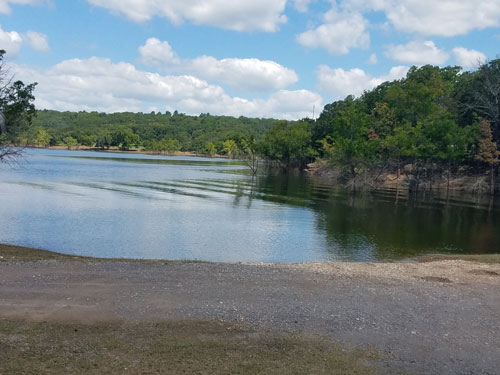 |
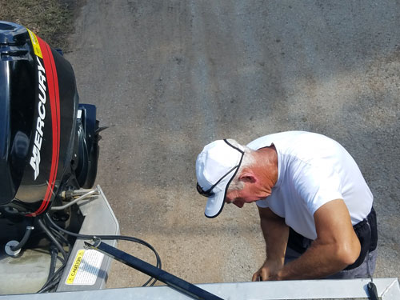 |
| Record rains resulted in record high flood levels at Lake
Tenkiller. We had to make up our own boat ramps because the real ramps were about 13 feet under water. |
Dad doesn't like pictures, so I had to snipe this one of him getting the boat ready to launch. |
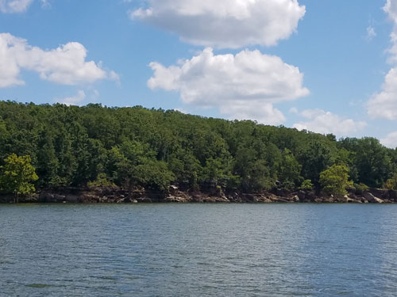 There are usually big bluff lines around the lake, but now just the tops are showing. |
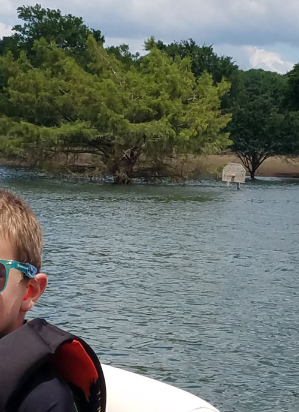 |
| Basketball goal just barely sticking out of the water. | |
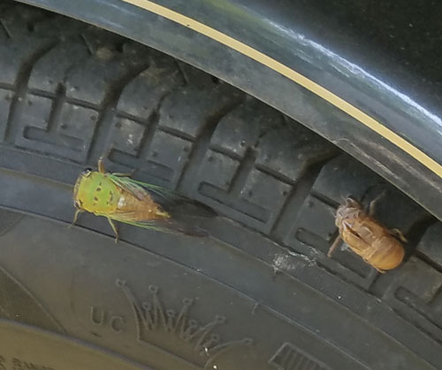 Science moment - we got to see this freshly-emerged locust on the boat trailer tire. |
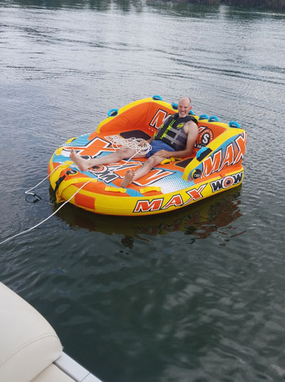 |
| On Saturday our men folk joined us for a full-family day in the
water. Here Eric is ready to take, "Big Bertha/Max Wow" for a spin. (We keep calling the tube by the wrong name, it's a family-wide issue.) |
|
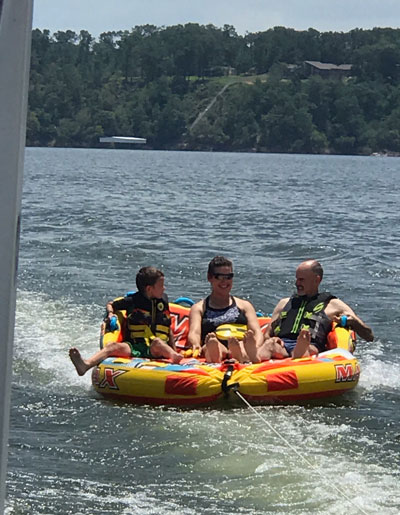 |
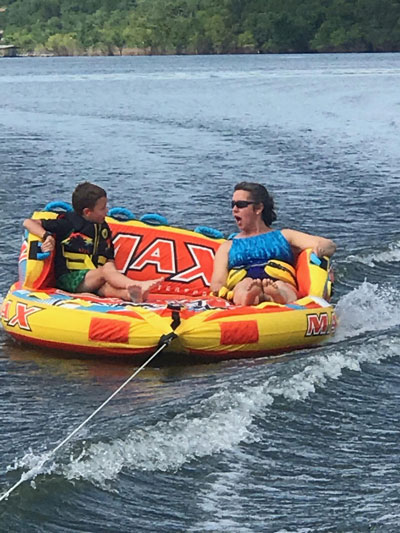 |
| Brodie, using his foot to spray me and Eric | Brodie, telling me a whopper of a tale while we ride. He is a great storyteller. |
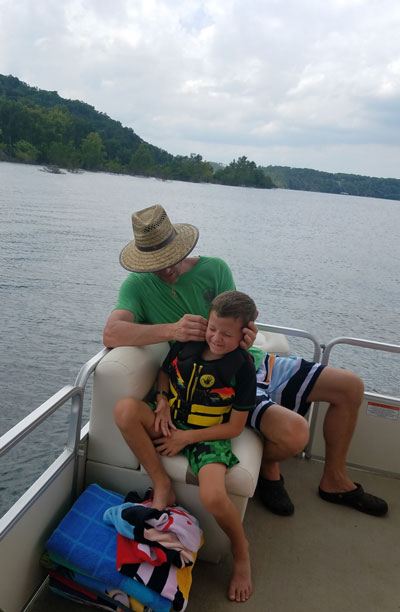 |
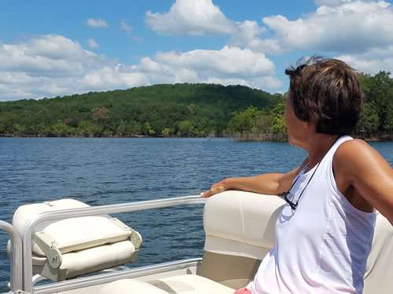 Mom, aka MeMaw, looking for boats so that we can hit their wake with the Big Bertha Max Wow. Because of the flooding and the cool temps, we had the lake almost
completely to ourselves. |
| Dad (Keith), making sure those ear plugs are in there nice and deep. | |
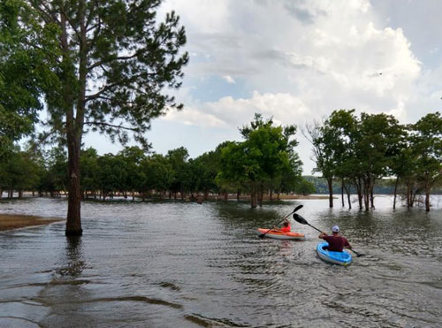 Here Eric and Brodie use kayaks to check out the playground that is
separated from the |
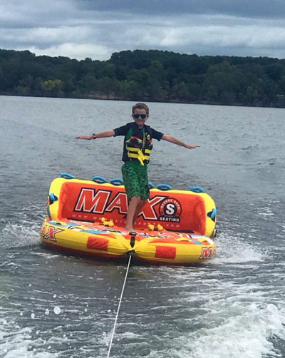 Brodie getting more and more brave with his tricks on the Big Bertha Max Wow. |
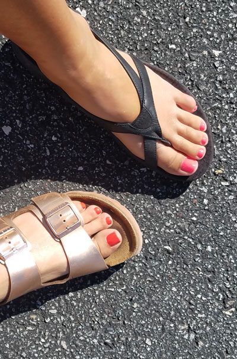 |
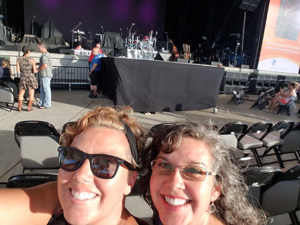 Ready for the show to start. We had awesome seats - 3rd row! |
| On Sunday after church, my sister Desirae and I headed to
Bentonville to get our toes done (thanks Mom & Desirae for treating me to mine!) and see the concert. |
|
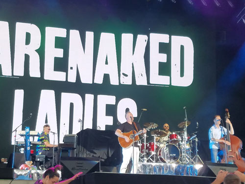
|
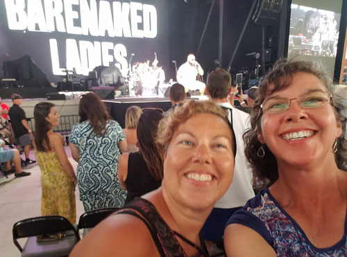 |
| The Barenaked Ladies were the opening act and they were
fantastic. So funny! I didn't know I was a fan until I started checking out their music before the concert. I'm a big fan now. This show was called the "Group Therapy Tour." |
Desirae & I with the Barenaked Ladies finale going on behind
us.
|
|
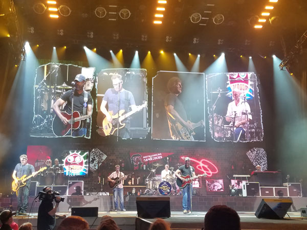 The main event - Hootie & the Blowfish! I have been a major fan of theirs from the first. I've
seen them about 6 times live, but this was by far the best. |
|
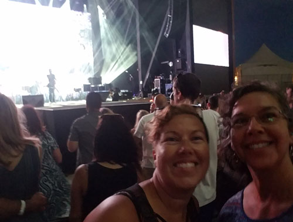 |
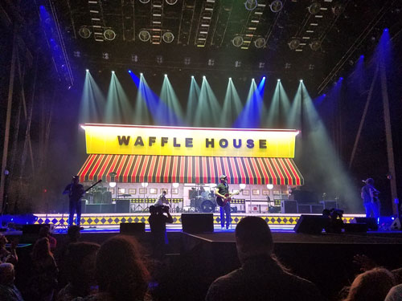 |
| I tried about 12 times to get a shot of us and them in the same
frame, but it never worked. Thank you Desirae for putting up with all my repeated (annoying) attempts! |
They had many cool backdrops, but this was my favorite.
Scattered, Smothered, & Covered, right?!! |
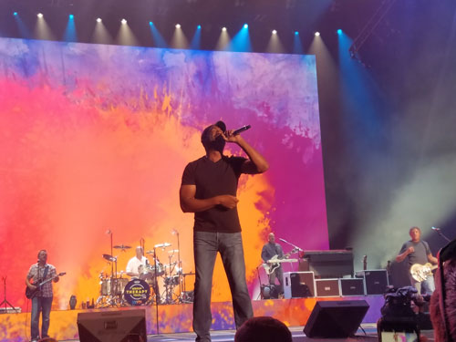 |
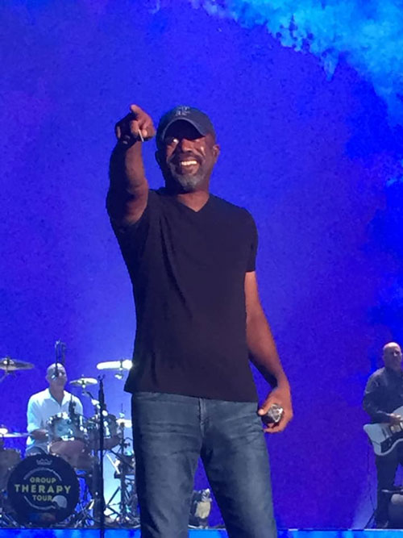 |
| Desirae got this great shot of Darius, with Soni in the left
side background. It was so strange to see Soni with no hair! |
|
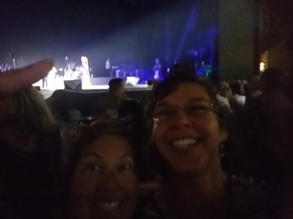 |
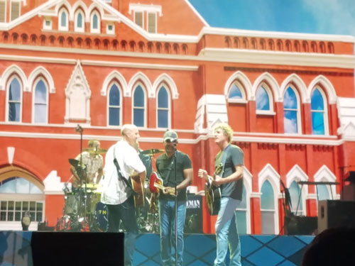 |
| Another of my 12 attempts to get us and the stage in the same shot. | "Will the Circle Be Unbroken" - I loved this part. |
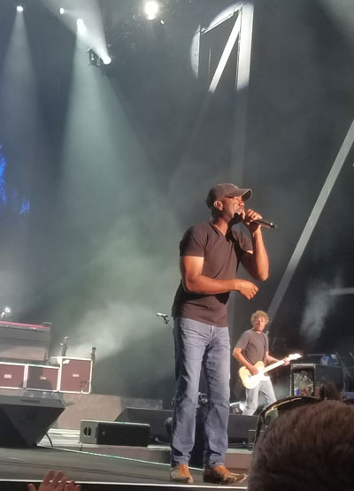 |
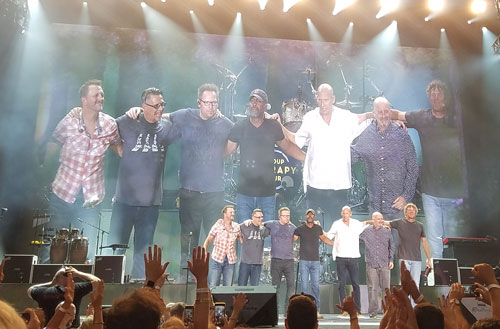 The big farewell after the encore. Great concert! |
| Darius singing one of his songs from his solo country career, also very good. | |
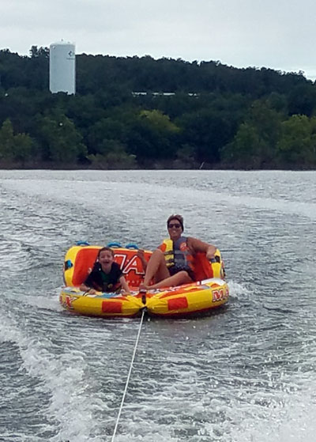 |
The following day, Monday, was our last day at the lake. It was also the coolest so Desirae was the only one tough enough to ride the Big Bertha Max Wow with Brodie. |
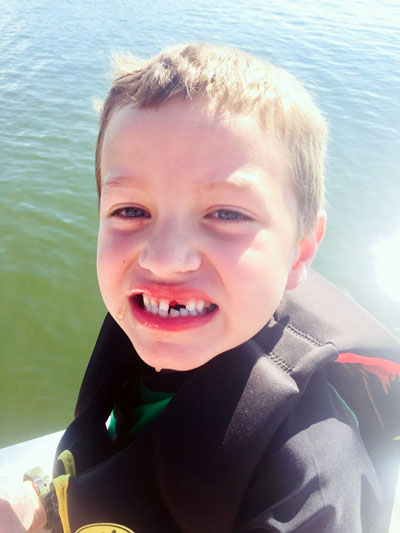 |
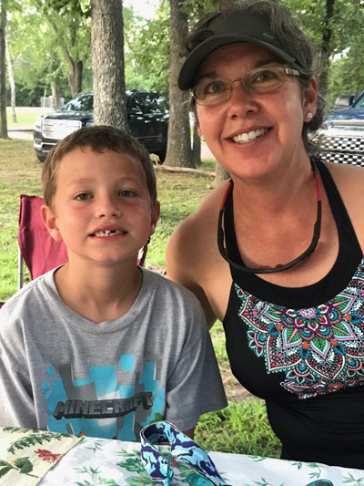 |
| Big event - Brodie pulled his front tooth! I was happy to
be there with him for this life event. A couple of weeks later he lost the other front tooth. I'll never forget the first time he found out that he was going to lose his
teeth. |
Me and Brodie, we had a great time hanging out at the lake
together.
|